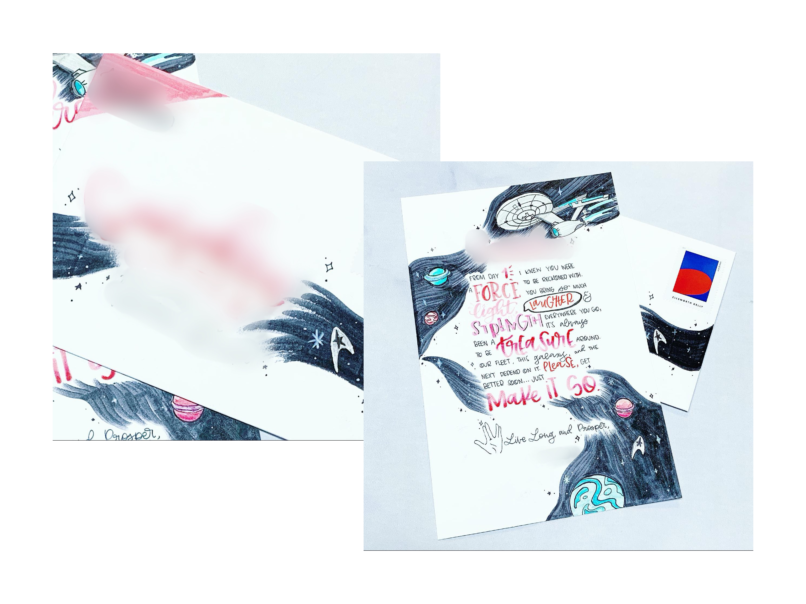
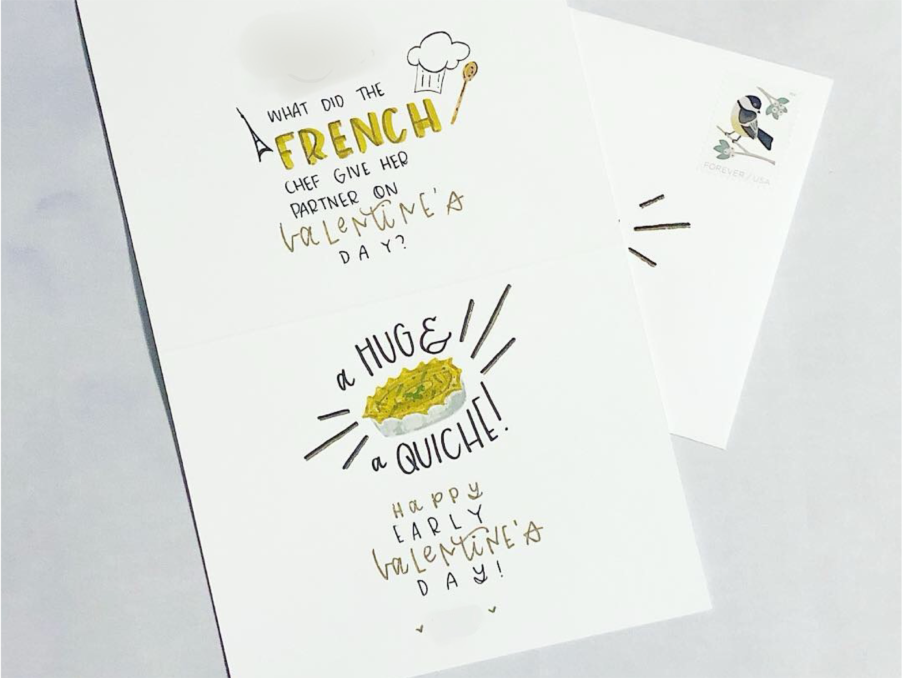
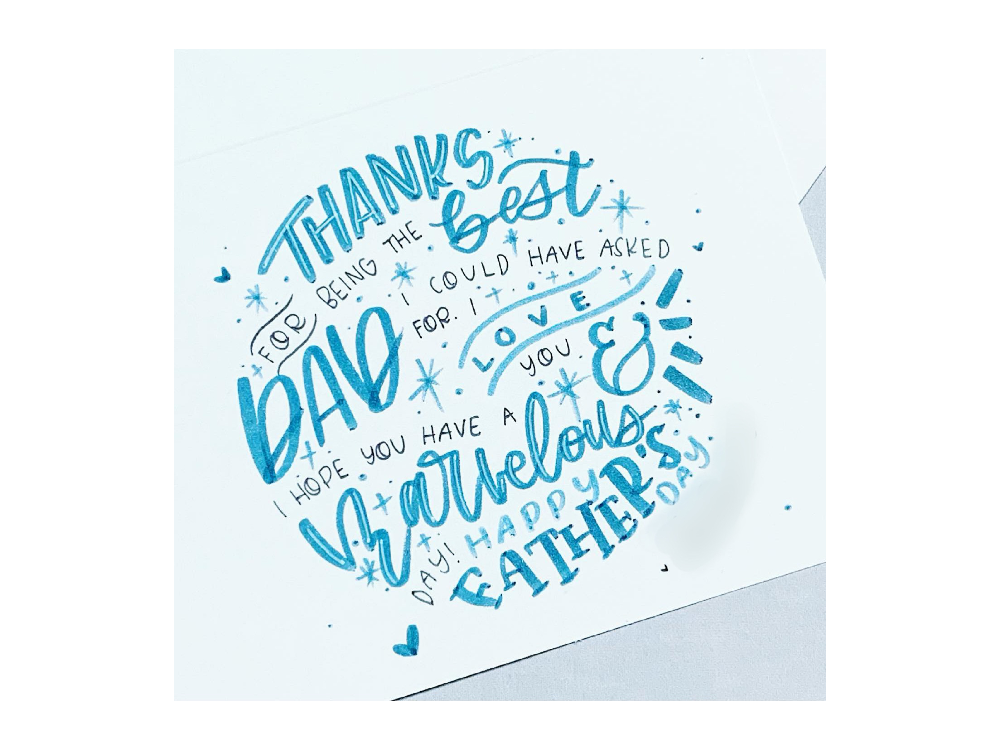
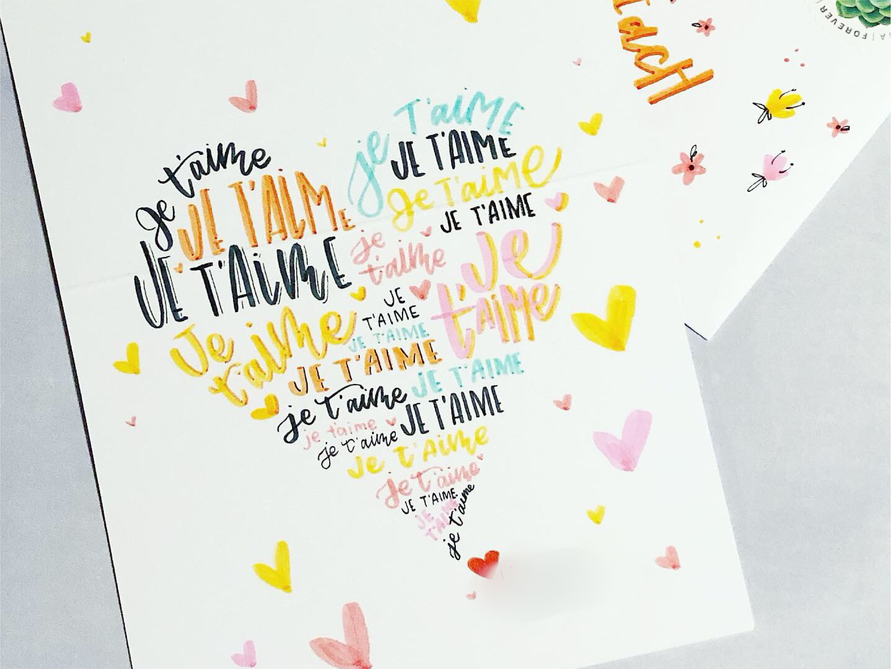
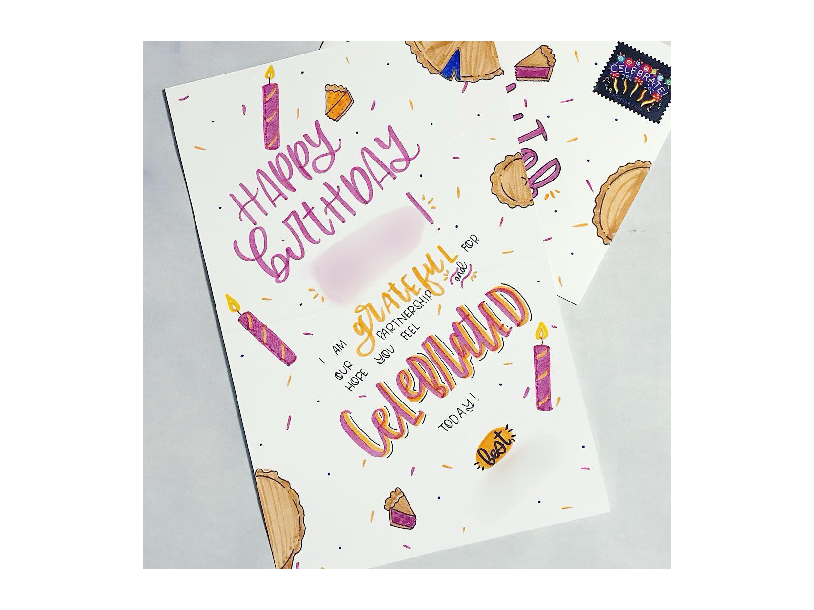
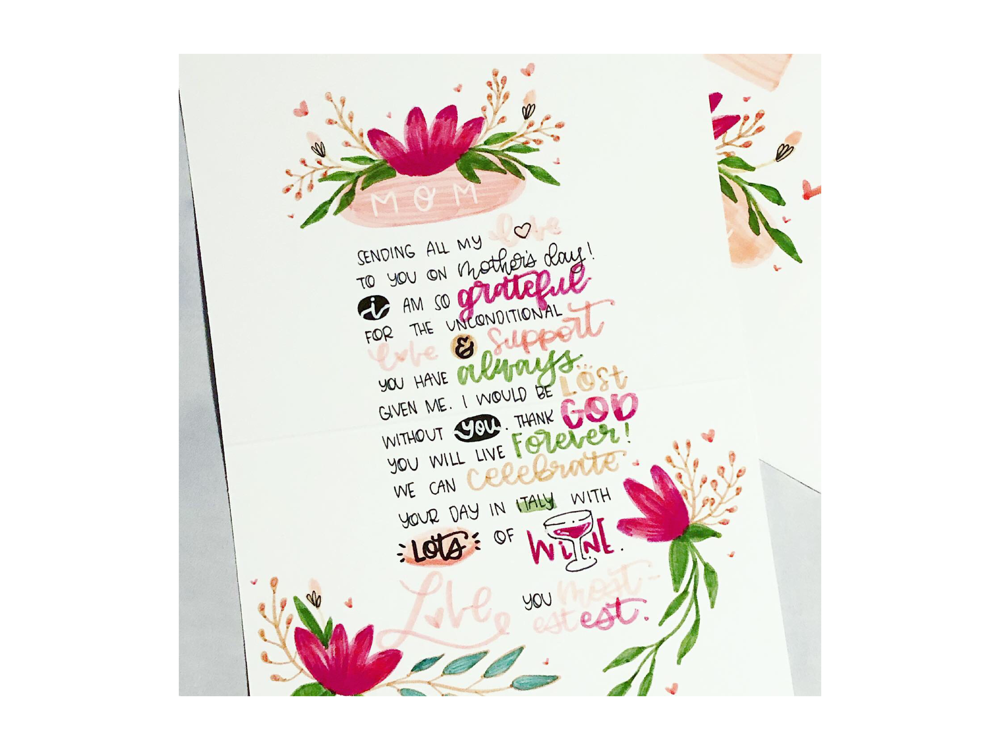
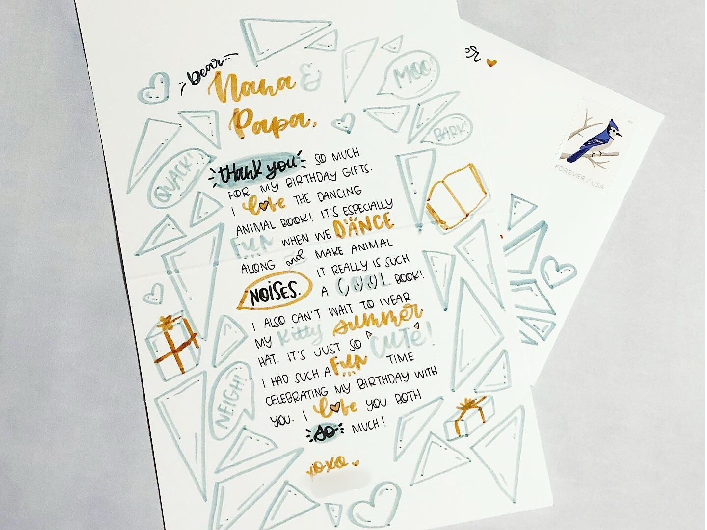
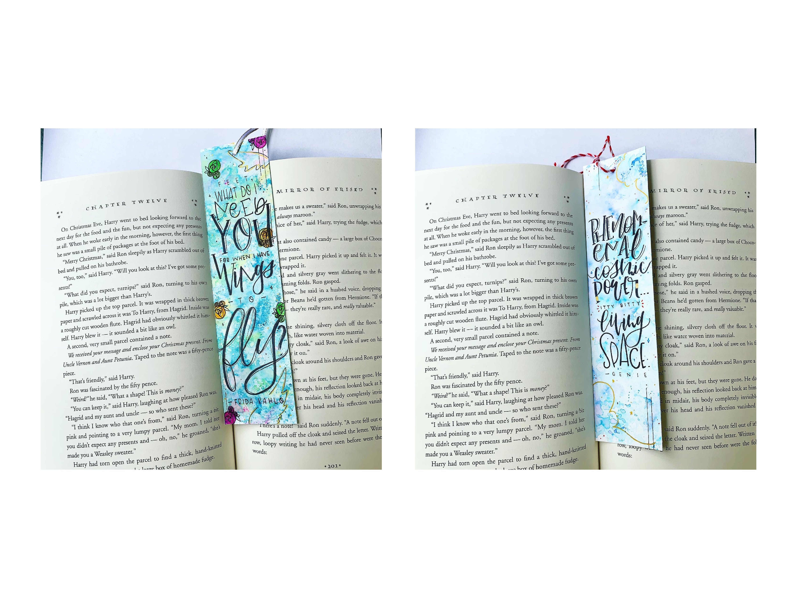
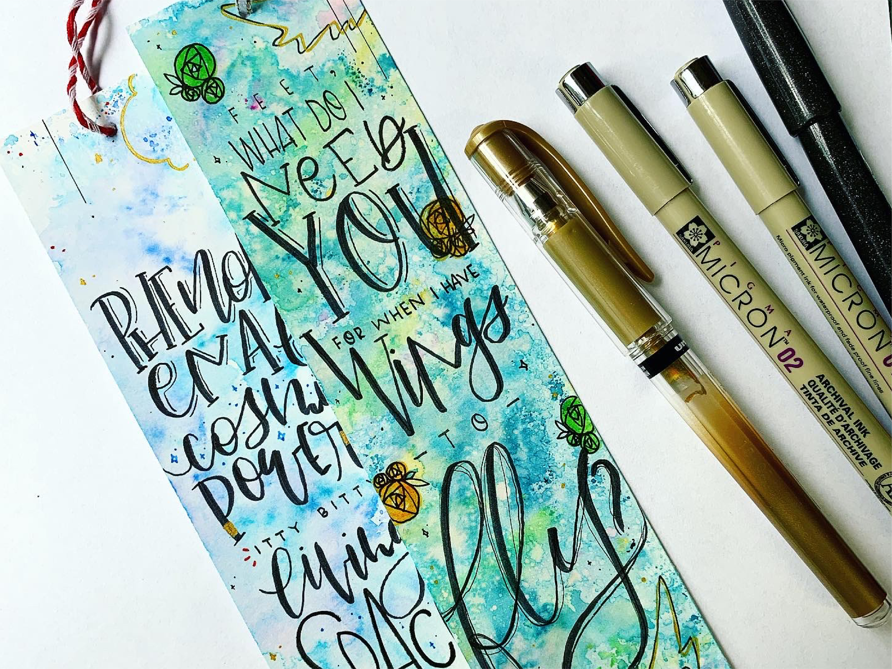
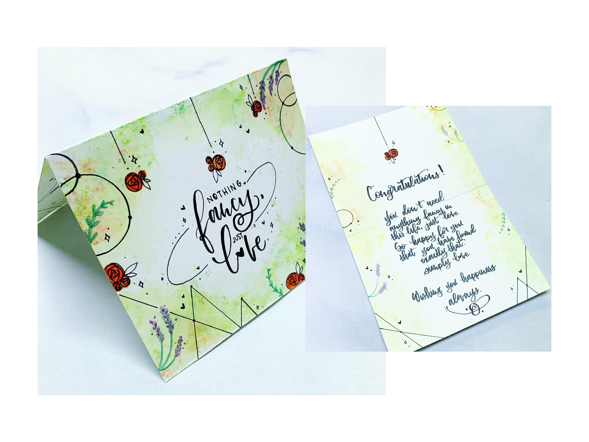
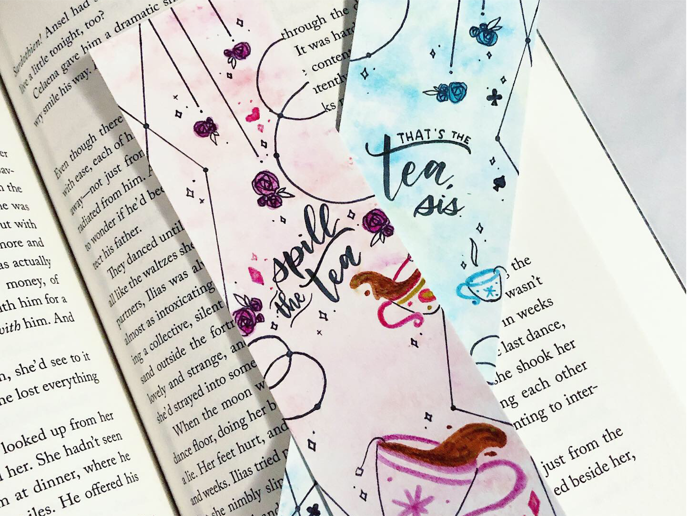
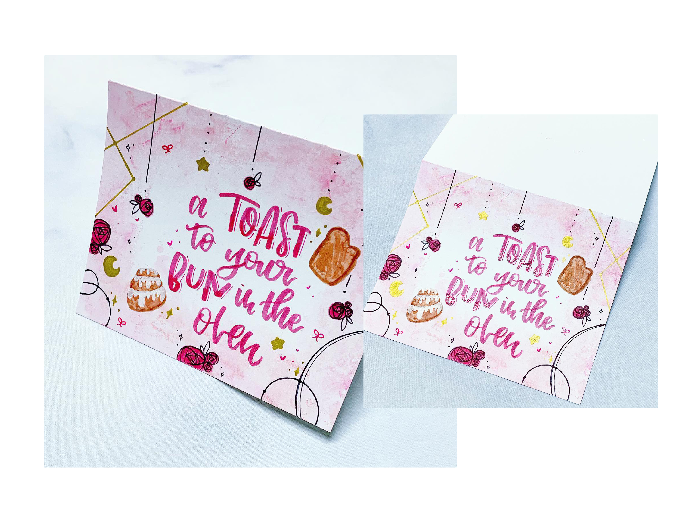
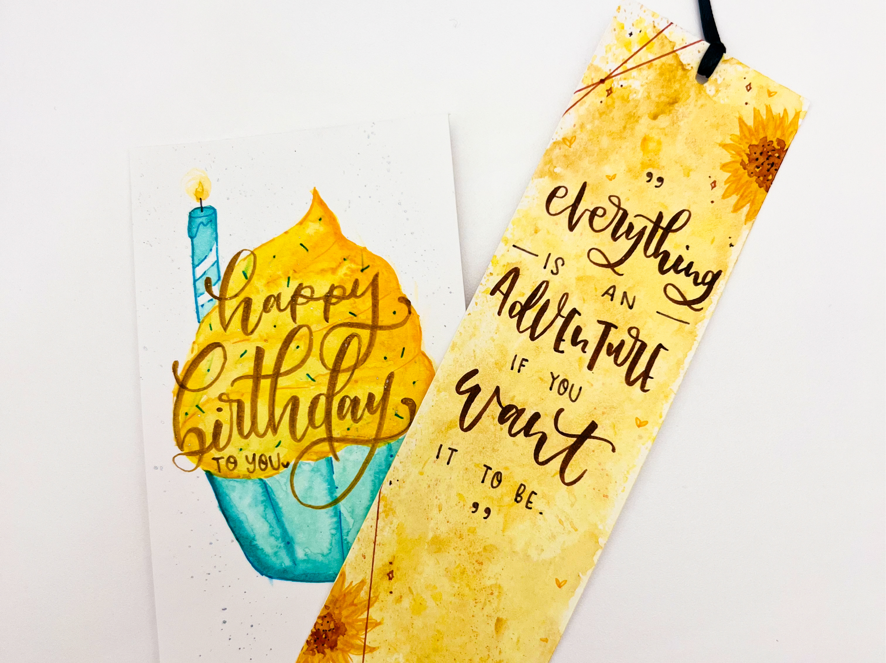
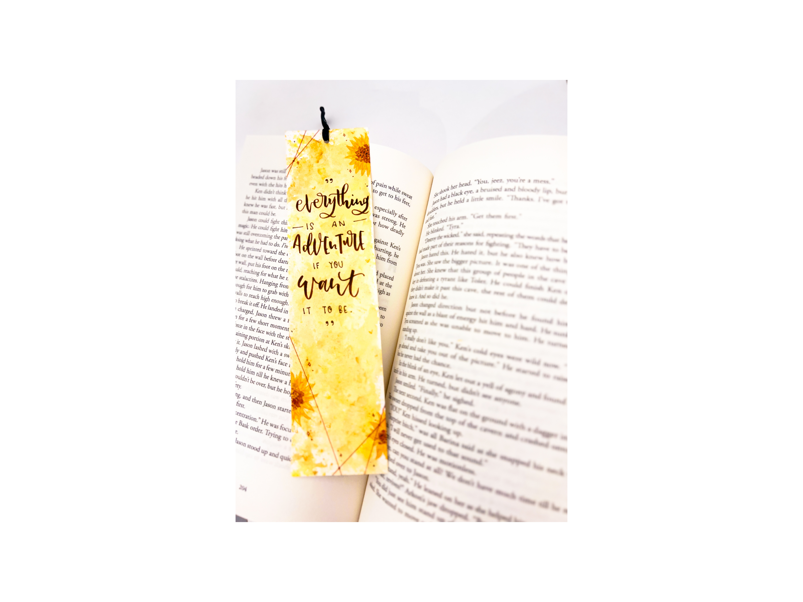
Lettering: PunkPost
Punkpost was a really fun company that contracted hand-lettering artists to bring your messages to life with amazing hand-lettering and illustrations. Punkpost provided the designed cards (which I also contributed to some of their catalog), you as the client provided the message. A wonderful artist then hand-lettered your message and got it into the mail for you!
Each assignment was given the day before. Each artist got 2–4 clients a day, with a heavier workload around popular card-sending holidays like Valentine's, Mother's Day, Father's Day, etc. Photographs of cards and addressed envelopes were sent to clients prior. Clients had 24 hours to respond with any issues. Provided no reply, envelopes were stamped and artists put cards in the mail to the clients' recipients.
The company provided some style guidelines. Clients had 5 styles to choose from, and each had a set of guidelines to provide both the client and artist with expectations, ranging from simple to fun—clean print to bold, exciting lettering and possibly some illustrations.
Lettering: Personal Projects
Lettering was something I picked up as an assignment in Experimental Typography and fell in love with. From there, I worked on honing the skill and enjoy creating lettering projects for personal use and gifts like handwritten/hand-lettered cards and bookmarks.
Bookmarks are my absolute favorite medium to create custom hand-lettered pieces. I combine watercolor, illustration, and hand-lettering to make pieces that capture the feeling of the quotes I choose.
These make for really heartfelt and meaningful gifts. None that I have created have stayed with me; they've all been created as gifts or trades with friends. I feel like the world of design creates a lot of stuff that just gets thrown away: flyers, posters, packaging materials. I love creating something beautiful that gets kept and used.